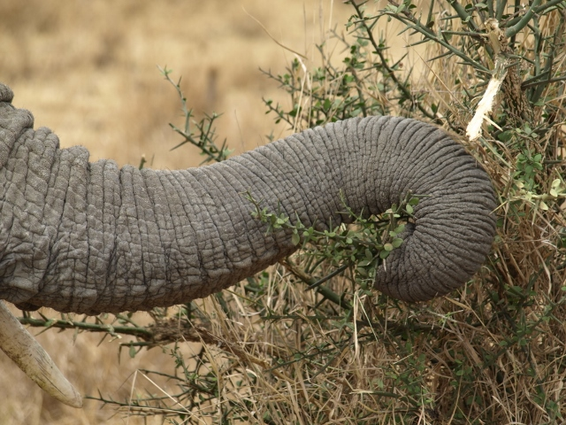
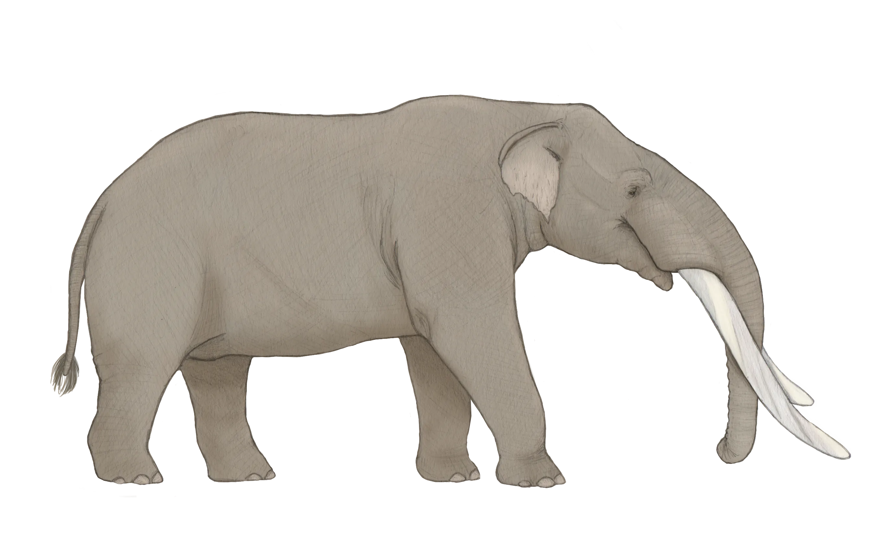

Museo De Paleontología SEMAHN
-
Inicio
-
Otras publicaciones
Proboscídeos
Proboscídos del Pleistoceno: vestigios de la historia evolutiva en Chiapas
Museo de Paleontología SEMAHN
Inicio
Otras publicaciones
Museo De Paleontología SEMAHN
Inicio
Otras publicaciones
Proboscídos del Pleistoceno: vestigios de la historia evolutiva en Chiapas
El orden Proboscídea agrupa a algunos de los mamíferos más fascinantes de la historia natural, caracterizados por adaptaciones únicas que han capturado la imaginación humana. Estos animales, que incluyen tanto a las tres especies actuales de elefantes como a numerosas formas extintas que presentan un conjunto de rasgos anatómicos verdaderamente excepcionales.

La probóscide o trompa constituye sin duda, su característica más distintiva. Este órgano multifuncional, producto de la fusión evolutiva entre la nariz y el labio superior, combina una sorprendente fuerza muscular con una precisión extraordinaria. Los proboscídeos emplean esta versátil herramienta para un amplio rango de actividades: desde arrancar delicadas hojas hasta derribar obstáculos, transportar agua e incluso emitir complejas señales acústicas para comunicarse. Sus imponentes colmillos, que en realidad son incisivos superiores transformados en defensas de marfil, representan otra adaptación notable. Estas estructuras, presentes en la mayoría de las especies (desde los elefantes actuales hasta los majestuosos mamuts del Pleistoceno), cumplen funciones diversas que van desde la defensa hasta el desplazamiento de vegetación y la exhibición social.
La especialización herbívora de estos animales se manifiesta claramente en su dentición molar. Sus grandes molares, con complejos patrones de crestas de esmalte (una adaptación conocida como hiposodoncia), funcionan como eficientes trituradoras de vegetación dura, permitiéndoles procesar grandes cantidades de material vegetal fibroso.

Para el estado de Chiapas, este orden destaca por dos Especies de distintos géneros los Cuvieronius (con sus característicos colmillos en ambas mandíbulas y molares bunodontos para una dieta mixta). Y los Mammuthus (distinguió por su amplia distribución en el Pleistoceno y sus molares planos y estriados similar a los elefantes modernos). Esta notable diversificación, que abarcó prácticamente todos los continentes, convierte a los proboscídeos en uno de los grupos de mamíferos más exitosos de la historia geológica, cuyo estudio continúa revelando fascinantes aspectos sobre la evolución de los ecosistemas terrestres.
El mamut colombino o mamut de Colón es una especie extinta de mamut que habitó en Norteamérica, extendiéndose desde el norte de Estados Unidos hasta Costa Rica en el sur durante la época del Pleistoceno. Fue una de las últimas especies del linaje de los mamuts que se originó a inicios del Plioceno con el hipotético antepasado común entre M. columbi y M. subplanifrons. El mamut colombino evolucionó a partir del mamut de la estepa, el cual ingresó a Norteamérica desde Asia hace unos 1,5 millones de años. El mamut pigmeo del archipiélago del Norte de California evolucionó a su vez que los mamuts colombinos. El pariente vivo más cercano del mamut colombino y los demás mamuts es el elefante asiático. Alcanzando 4 metros hasta la cruz y con un peso de 8 - 10 toneladas, el mamut colombino fue una de las mayores especies de mamut. Tenía grandes defensas ("colmillos") muy curvadas y cuatro molares, los cuales eran reemplazados seis veces durante la vida del animal.

Cuvieronius es un género extinto de gonfoterio de América. Fue nombrado en honor al naturalista francés Georges Cuvier, siendo un animal que medía unos 2,7 metros de alto y lucía en general similar a los elefantes modernos excepto por sus colmillos de forma espiral y su cráneo más bajo y alargado. Así como en los elefantes modernos, hay evidencias de dimorfismo sexual en Cuvieronius. Este animal evolucionó inicialmente en América del Norte entre hace 10,3 - 10,2 millones de años con evidencia fósil descubierta en el sitio de Tehuichila en el estado de Hidalgo, México. Durante el Gran Intercambio Americano de hace cerca de 3 millones de años, Cuvieronius y sus géneros hermanos Stegomastodon y Haplomastodon se movilizaron hacia el sur hasta alcanzar Suramérica.
Carbot-Chanona, G. y Gómez-Pérez, L.E. (2023). First record of the collared peccary Dicotyles tajacu (Artiodactyla, Tayassuidae), in the Gliptodonte locality, Villaflores municipality, Chiapas. Paleontología Mexicana, 12(2): 53-62.